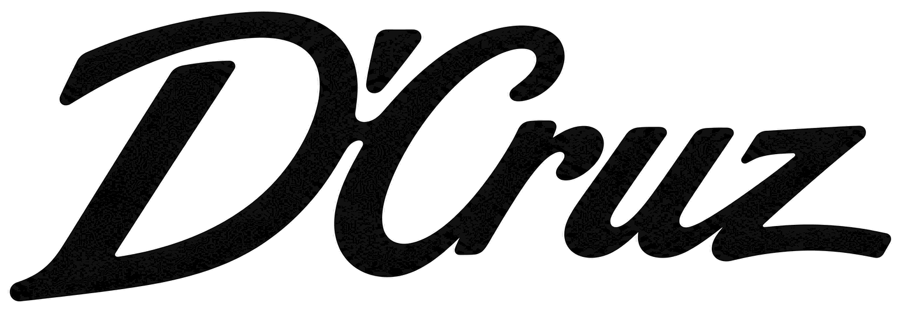

Internal review
Logo Playground
The proposed new logo — the D’Cruz script wordmark on its own — redrawn as a scalable SVG vector and checked against the source artwork pixel-for-pixel. Everything below is the same wordmark — only the file format changes.
- 99.9%pixel match vs. source raster
- 19.5 KBSVG file size
- ∞resolutions the SVG stays sharp at
Side by side
Identical size, identical background. Look for a difference — there isn’t one at this scale.

Overlay scrub
Drag to fade between the two — the vector is on top, the original underneath.
Blown up 3×
The raster was captured at 1536px wide. Past that size it softens; the vector never does.
Recolors freely
The SVG paths use currentColor, so a single file can sit on any background the site needs.